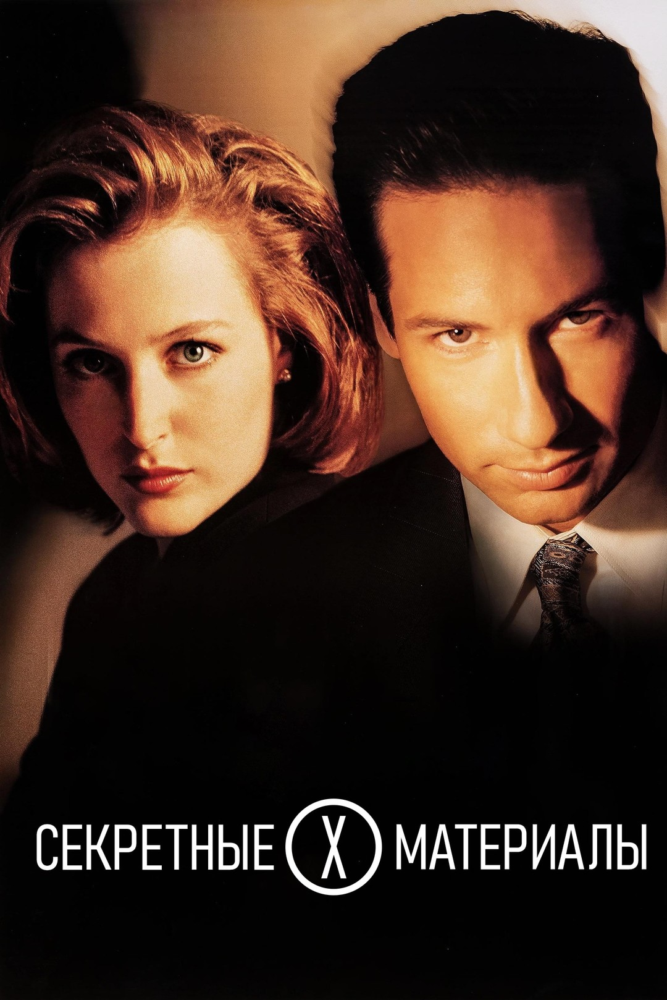
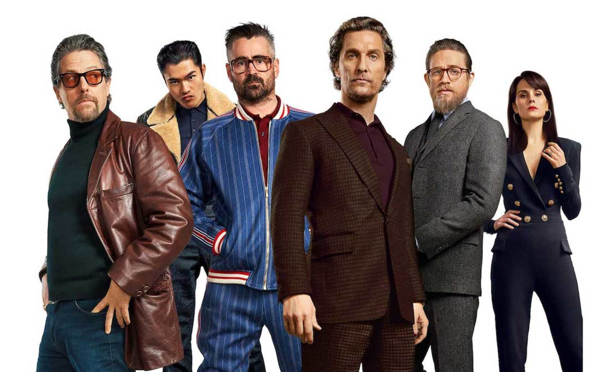
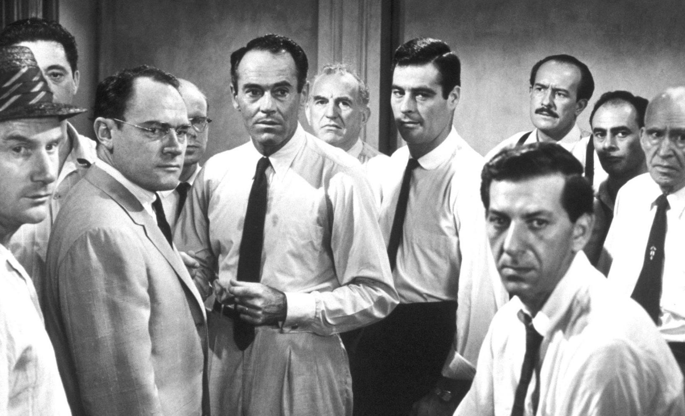

Я человек, который всей душой любит кинематограф и хочет рассказать про него, поделиться своими впечатлениями, рассказать о своем опыте
Так как я человек по профессии своей никак не связан с кинематографом, мое мнение не является экспертным, но пытается донестись от всей души.
Кто я и почему именно мой блог?
Мои любимые фильмы и сериалы
- Секретные материалы
- Джентльмены
- 12 разгневанных мужчин